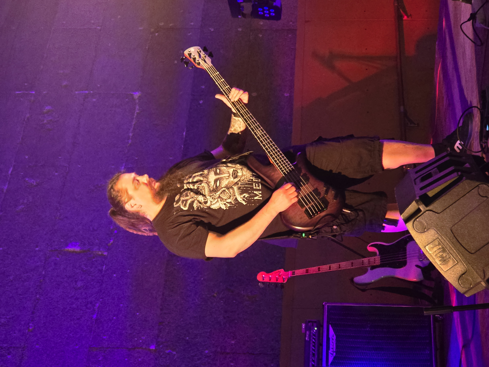

Né Nenad le 24 août 1986 en Croatie, Ned joue de la basse depuis plus de 22 ans — une vie menée avec une liberté assumée et une passion intacte pour le son lourd. C'est dans son pays natal qu'il forge ses premières armes : bassiste de Croatian Bad Blood (hardcore), il enregistre trois albums et construit un jeu robuste, ancré dans la puissance et la précision. Il passe ensuite chez Irish Fornth (death mélodique), où il contribue à un EP qui affine encore son identité musicale.
Son arrivée en France ouvre un nouveau chapitre. Il rejoint Lost & Unfound, enregistre un album et enchaîne les concerts, explorant un son plus posé sans jamais perdre de vue ses racines metal. Puis les Krakens entrent dans sa vie — et avec eux, la bonne étincelle : une complicité naturelle entre les membres et un son heavy metal qui lui colle à la peau.
Sur scène, Ned s'appuie sur une Spector NS II 5 et une tête Ampeg SVT-7 couplée à une V-4B, avec des baffles 4x10 et 2x10. Il enrichit son signal avec une pédale Darkglass B7K pour la distorsion et un préampli Ampeg Classic pour le grain supplémentaire. Son graal ? Une Spector Euro 5 sur une Ampeg SVT-2 avec un baffle 8x10. Ses influences voyagent de Judas Priest à Pantera, d'Iron Maiden à System of a Down, en passant par Black Sabbath, Slayer, Dio, Helloween ou Stratovarius — et la scène locale croate, qui lui a tout appris.
Repères
Born Nenad on August 24, 1986 in Croatia, Ned has been playing bass for over 22 years — living life on his own terms, with an unshakeable passion for heavy sound. Back home, he cut his teeth as bassist for Croatian Bad Blood (hardcore), recording three albums and developing a playing style built on power and precision. He then joined Irish Fornth (melodic death metal), contributing to an EP that further sharpened his musical identity.
Moving to France opened a new chapter. He joined Lost & Unfound, recorded an album and played a string of gigs, exploring a broader sonic palette while never losing sight of his metal roots. Then the Krakens came along — and with them, the right spark: a genuine chemistry between the members and a heavy metal sound that felt like home.
On stage, Ned runs a Spector NS II 5 through an Ampeg SVT-7 and V-4B head with 4x10 and 2x10 cabs. His signal chain includes a Darkglass B7K for distortion and an Ampeg Classic preamp for extra punch. The dream rig? A Spector Euro 5 into an Ampeg SVT-2 with an 8x10 cab. His influences range from Judas Priest to Pantera, Iron Maiden to System of a Down, with stops at Black Sabbath, Slayer, Dio, Helloween, Stratovarius — and the Croatian local scene that started it all.
Timeline